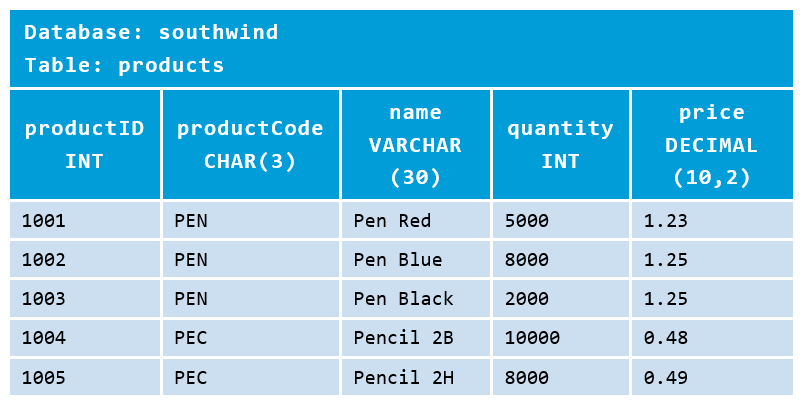

Summary MySQL command
สรุปคำสั่งของ mysql เพื่อใช้สำหรับการอ้างอ้างการเรียนรู้ ได้ดังนี้
--แทน comment SQL จะไม่นำมาประมวลผล
1. Database Level
DROP DATABASE databaseName -- Delete the database (irrecoverable!)
DROP DATABASE IF EXISTS databaseName -- Delete if it exists
CREATE DATABASE databaseName -- Create a new database
CREATE DATABASE IF NOT EXISTS databaseName -- Create only if it does not exists
SHOW DATABASES -- Show all the databases in this server
USE databaseName -- Set the default (current) database
SELECT DATABASE() -- Show the default database
SHOW CREATE DATABASE databaseName -- Show the CREATE DATABASE statement
2. Table-level
DROP TABLE [IF EXISTS] tableName, ...
CREATE TABLE [IF NOT EXISTS] tableName (
columnName columnType columnAttribute, ...
PRIMARY KEY(columnName),
FOREIGN KEY (columnNmae) REFERENCES tableName (columnNmae)
)
SHOW TABLES -- Show all the tables in the default database
DESCRIBE|DESC tableName -- Describe the details for a table
ALTER TABLE tableName ... -- Modify a table, e.g., ADD COLUMN and DROP COLUMN
ALTER TABLE tableName ADD columnDefinition
ALTER TABLE tableName DROP columnName
ALTER TABLE tableName ADD FOREIGN KEY (columnNmae) REFERENCES tableName (columnNmae)
ALTER TABLE tableName DROP FOREIGN KEY constraintName
SHOW CREATE TABLE tableName -- Show the CREATE TABLE statement for this tableName
3. Row-level::
-- Row-Level
INSERT INTO tableName
VALUES (column1Value, column2Value,...) -- Insert on all Columns
INSERT INTO tableName
VALUES (column1Value, column2Value,...), ... -- Insert multiple rows
INSERT INTO tableName (column1Name, ..., columnNName)
VALUES (column1Value, ..., columnNValue) -- Insert on selected Columns
DELETE FROM tableName WHERE criteria
UPDATE tableName SET columnName = expr, ... WHERE criteria
SELECT * | column1Name AS alias1, ..., columnNName AS aliasN
FROM tableName
WHERE criteria
GROUP BY columnName
ORDER BY columnName ASC|DESC, ...
HAVING groupConstraints
LIMIT count | offset count
-- Others
SHOW WARNINGS; -- Show the warnings of the previous statement
มาเริ่มต้นสร้าง ฐานข้อมูลชื่อ southwind

mysql> SELECT version()
mysql> CREATE DATABASE southwind;
Query OK, 1 row affected (0.03 sec)
mysql> DROP DATABASE southwind;
Query OK, 0 rows affected (0.11 sec)
mysql> CREATE DATABASE IF NOT EXISTS southwind;
Query OK, 1 row affected (0.01 sec)
mysql> DROP DATABASE IF EXISTS southwind;
Query OK, 0 rows affected (0.00 sec)
ให้ระวังคำสั่ง
SQL DROPเนื่องจาก ไม่สามารถเรียกคืนได้ sql ไม่มีคำสั่ง undoแสดง ฐานข้อมูล เราสามารถใช้
\g(slash g) หรือ;semicolon เป็นการบอกให้ sql รับคำสั่งไปประมวลผล- ใช้
--หรือ/* and */เป็นการ แสดง comment
mysql> CREATE DATABASE IF NOT EXISTS southwind;
mysql> SHOW CREATE DATABASE southwind \G
*************************** 1. row ***************************
Database: southwind
Create Database: CREATE DATABASE `southwind` /*!40100 DEFAULT CHARACTER SET latin1 */
เมื่อสร้าง ฐานข้อมูลแล้วก็จะมีการกำหนดการใช้งานให้เป็น ฐานข้อมูลหลักหรือ
default database ด้วยคำสั่ง USE databasename ทำให้สามารถอ้างอิง ตารางได้โดยตรง โดยปรกติหากเราไม่ได้กำหนดค่าของ default database จะต้องอ้างอิงตารางด้วย fully-qualified databaseName.tableName
-- Set "southwind" as the default database so as to reference its table directly.
mysql> USE southwind;
Database changed
-- Show the current (default) database
mysql> SELECT DATABASE();
+------------+
| DATABASE() |
+------------+
| southwind |
+------------+
-- Show all the tables in the current database.
-- "southwind" has no table (empty set).
mysql> SHOW TABLES;
Empty set (0.00 sec)
สร้างตาราง ภายในฐานข้อมูล
-- Create the table "products". Read "explanations" below for the column defintions
mysql> CREATE TABLE IF NOT EXISTS products (
productID INT UNSIGNED NOT NULL AUTO_INCREMENT,
productCode CHAR(3) NOT NULL DEFAULT '',
name VARCHAR(30) NOT NULL DEFAULT '',
quantity INT UNSIGNED NOT NULL DEFAULT 0,
price DECIMAL(7,2) NOT NULL DEFAULT 99999.99,
PRIMARY KEY (productID)
);
Query OK, 0 rows affected (0.08 sec)
-- Show all the tables to confirm that the "products" table has been created
mysql> SHOW TABLES;
+---------------------+
| Tables_in_southwind |
+---------------------+
| products |
+---------------------+
-- Describe the fields (columns) of the "products" table
mysql> DESCRIBE products;
+-------------+------------------+------+-----+------------+----------------+
| Field | Type | Null | Key | Default | Extra |
+-------------+------------------+------+-----+------------+----------------+
| productID | int(10) unsigned | NO | PRI | NULL | auto_increment |
| productCode | char(3) | NO | | | |
| name | varchar(30) | NO | | | |
| quantity | int(10) unsigned | NO | | 0 | |
| price | decimal(7,2) | NO | | 99999.99 | |
+-------------+------------------+------+-----+------------+----------------+
-- Show the complete CREATE TABLE statement used by MySQL to create this table
mysql> SHOW CREATE TABLE products \G
*************************** 1. row ***************************
Table: products
Create Table:
CREATE TABLE `products` (
`productID` int(10) unsigned NOT NULL AUTO_INCREMENT,
`productCode` char(3) NOT NULL DEFAULT '',
`name` varchar(30) NOT NULL DEFAULT '',
`quantity` int(10) unsigned NOT NULL DEFAULT '0',
`price` decimal(7,2) NOT NULL DEFAULT '99999.99',
PRIMARY KEY (`productID`)
) ENGINE=InnoDB DEFAULT CHARSET=latin1
จากตารางมีการสร้าง 5 colume
* productID กำหนดเป็น INT UNSIGNED จำนวนเต็มที่ไม่เป็นลบ non-negative integer
* productCode กำหนดเป็น CHAR(3) อักขระ ขนาด 3 ตัวอักษร
* name กำหนดเป็น CHAR(30) อักขระ ขนาด 30 ตัวอักษร
* quantity กำหนดเป็น INT UNSIGNED
* price กำหนดเป็น DECIMAL(10,2) ตัวเลขขนาดทศนิยมจำนวน 2 หลัก นิยมกำหนดให้กับการเก็บข้อมูลที่เป็นจำนวนเงิน